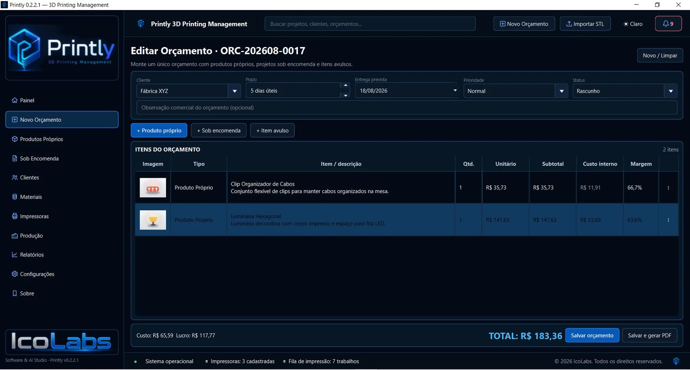
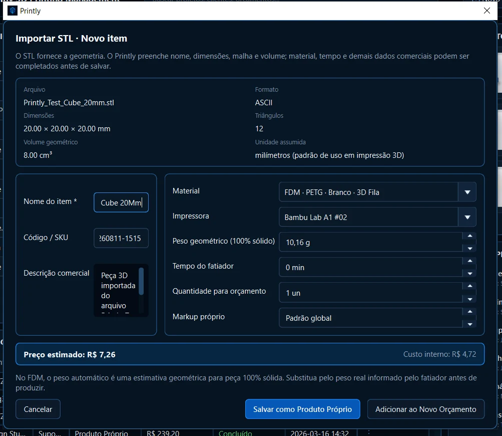

01
Quanto realmente custa imprimir?
Centralize material, energia, depreciação, falha, margem e custos extras na precificação.
Precificação rápida →Do primeiro cálculo à entrega, o Printly centraliza precificação, orçamentos, clientes, produtos, materiais, impressoras, produção e relatórios em um software criado para a rotina real de quem trabalha com impressão 3D.
Licença vitalíciaPagamento único
Sem mensalidadeO software é seu
Para WindowsAplicativo instalado

Gestão completaEm um só lugar
FDM + SLAFilamentos e resinas
Dados locaisBanco no seu computador
IcoLabsSoftware & AI Studio
O Printly foi desenhado para reunir as informações que normalmente ficam dispersas e transformar o dia a dia em um fluxo profissional, visual e rastreável.
Centralize material, energia, depreciação, falha, margem e custos extras na precificação.
Precificação rápida →Veja fila, prioridade, prazo, situação, impressora, material e execução real da produção.
Controle de produção →Alertas ajudam a enxergar atrasos, produção com problema, materiais abaixo do mínimo e orçamentos aguardando retorno.
Central de alertas →Explore telas reais do aplicativo e veja como cada etapa da operação conversa dentro da mesma interface.
Precifique rapidamente, acompanhe o resumo do cálculo, acesse produtos próprios, histórico de orçamentos e a fila de produção sem perder contexto.





Custo de material, energia, depreciação, falha, margem e custos extras organizados para apoiar sua formação de preço.
Crie orçamentos multi-item, associe clientes e projetos, acompanhe status, histórico e gere PDF.
Mantenha um catálogo reutilizável com produtos, custos e parâmetros prontos para novos orçamentos.
Separe trabalhos personalizados dos produtos de catálogo e mantenha o contexto de cada cliente.
Cadastre filamentos e resinas, custos, estoque e parâmetros para alimentar seus cálculos e produção.
Cadastre as máquinas utilizadas na operação e conecte produção, custos e capacidade ao equipamento real.
Fila com prioridade, prazo, status, impressora, material, previsto e realizado para acompanhar cada trabalho.
Leia geometria, dimensões, triângulos e volume e transforme o arquivo em produto ou item de orçamento.
Prazo, produção, estoque e orçamentos aguardando retorno aparecem em uma central orientada a ação.
Acompanhe a operação com filtros, indicadores e gráficos para uma leitura gerencial do negócio.
Faça backup dos dados e restaure sua base quando necessário, mantendo sua operação protegida.
Escolha a aparência que melhor combina com seu ambiente sem perder a identidade visual do Printly.
Prazo, prioridade, situação, impressora, material, consumo previsto e realizado ficam reunidos na fila operacional. Você sabe o que está imprimindo, o que está atrasado e o que precisa da sua atenção.
Importe um STL e o Printly lê os dados geométricos disponíveis, como dimensões, malha, volume e formato. A partir daí, complete os dados comerciais e salve como produto próprio ou leve diretamente ao orçamento.
O aplicativo é instalado localmente e utiliza banco de dados próprio. Você não precisa depender de uma aba aberta no navegador para acessar sua rotina de gestão.
Sem assinatura mensal para continuar usando. Adquira a licença do Printly por R$ 69,90 e organize sua operação de impressão 3D com uma ferramenta criada especificamente para esse trabalho.

Atendimento e compra diretamente com a IcoLabs pelo WhatsApp.
Não. O Printly é um aplicativo desktop para Windows, com interface própria e banco de dados local.
Não. O valor informado é de R$ 69,90 por uma licença vitalícia, em pagamento único.
Sim. O cadastro de materiais contempla tecnologias FDM e SLA, permitindo trabalhar com filamentos e resinas.
Sim. O Printly possui fluxo de orçamento e exportação para PDF.
Sim. A importação lê informações geométricas do STL e permite completar os dados comerciais antes de salvar ou adicionar ao orçamento.
O Printly utiliza banco local no computador e possui recursos de backup e restauração.